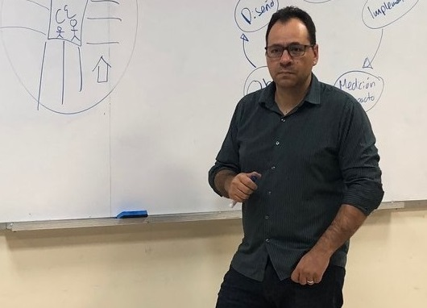

About
I am an Associate Professor in the School of Government and Public Policy at the University of Arizona. I earned my Ph.D. in Political Science from the University of Notre Dame.
My research interests focus on understanding the micro-foundations and dynamics of political and criminal violence in Latin America. Why are some countries ravaged by high levels of political and organized crime violence? What are the paths for building safer, more peaceful and democratic countries? These are the core questions guiding my research interests.
I address this agenda with a solid quantitative toolset including quasi-experimental and experimental techniques, natural language processing, Machine Learning (ML), Large Language Models (LLMs), and geographic information systems (GIS). My research primarily focuses on Latin America, with a particular emphasis on Mexico, Colombia, El Salvador, Guatemala, and Honduras.
Check out my research.
Check out my Google Scholar.
Teaching

For Students
If you want to request a recommendation letter from me, please be advised that I take these requests seriously as both our reputations are at stake. Strong letters of recommendation usually are the product of long and close relationships with faculty, so consider whether I am the most appropriate individual to ask for a letter.
I generally write a recommendation letter for students who:
- Took at least one course with me.
- Excelled in the course with a final grade "A".
- Worked with me as a research assistant at least one semester with good performance.
When requesting a recommendation letter, please consider the following procedure:
- Discuss with me the recommendation request before sending me the auto-generated email from the program you are applying for.
- Make a recommendation letter request by email at least three weeks in advance.
- Include the following information in a single email.
- Updated CV.
- Your transcripts and GPA.
- Relevant documents such as a statement of purpose or application letter.
- A brief description of the program, job, institution to which I will be addressing the letter. Include links with relevant information.
- A note with suggestions of what I should emphasize in the letter.